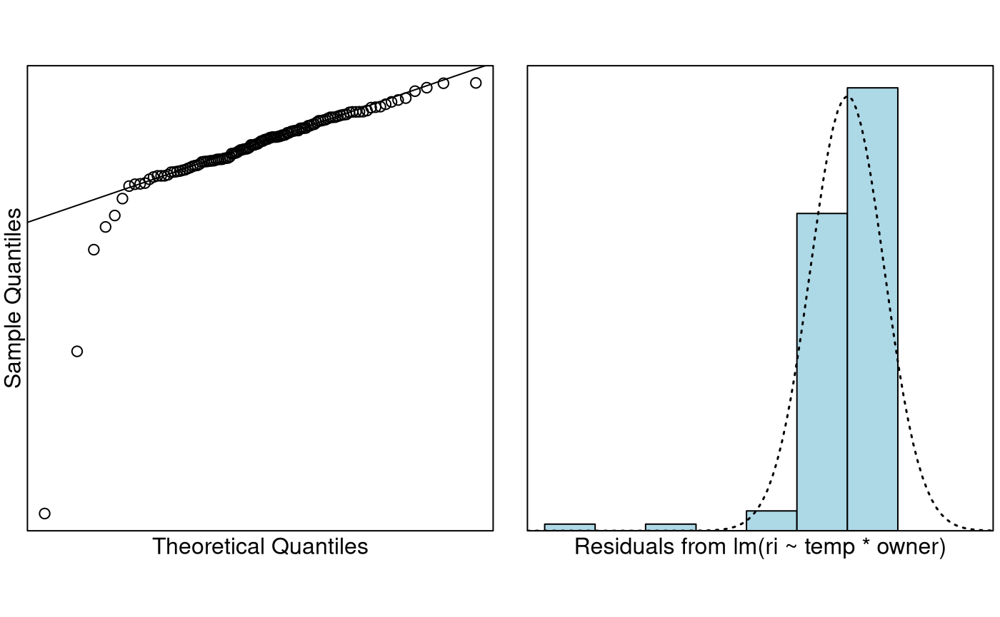
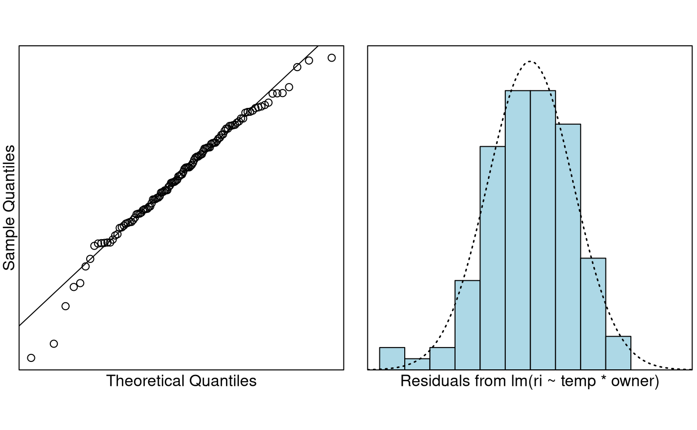

Note this handout requires that you install the
package dafs before you can try the examples.
Glass evidence can be important to forensic scientists. If a window, or some other source of glass, is broken during the commission of a crime, then tiny fragments maybe transferred to the breaker. Studies have shown that glass from the same source has a similar refractive index (RI), whereas glass from different sources usually have very different RIs. Therefore, the presence of glass fragments on the clothing of a person of iterest (POI) that have similar RI values to a broken source at a crime scene can associate that individual with the crime.
Refractive index describes the way light “bends” when it passes from one optical medium (like air) to medium of a different density (like glass or water). If you want to think about this, then think how a pencil appears to be “cut” when you see it viewed through a glass of water. This is because both the glass and the water are more dense than the air. RI of glass is determined by placing it in silicone oil. The optical density of silicone oil can changed by heating it or cooling it. A glass fragment is placed in a droplet of silicone oil which is then heated until the glass becomes optically indistinguishable from the oil. The temperature at which this happens is recorded. The the oil is cooled and the temperature at which the glass reappears is recorded. The average of these two temperatures is called the match temperature. This match temperature is then translated into RI by means of a calibration line. Calibration is the process where by a set of “standards”” with known values are measured with an instrument to observe the corresponding . These pairs of values can be used to produce a calibration curve which can be used to interpolate (or predict) the unknown value of for an observed . In some sense this is “inverse regression”—usually we know and we measure .
In this example we have a set of 12 standards (labelled B1–B12) of known RI value. Each of these standards has been measured multiple times by two different forensic scientists, Rachel Bennett (RB), and my Polish colleague Grzegorz “Greg” Zadora (GZ). The RI and match temperature has been recorded for each measurement of each standard by each scientist. We want to know whether the two different labs/scientists have two different calibration lines.
data("ri.calibration.df")
## Let's make the name shorter so it is easier to work with
ri.df = ri.calibration.df
names(ri.df)## [1] "standard" "ri" "temp" "owner"
head(ri.df)## standard ri temp owner
## 1 B1 1.52912 39.97 RB
## 2 B1 1.52912 39.90 RB
## 3 B1 1.52912 39.97 RB
## 4 B1 1.52912 39.70 RB
## 5 B1 1.52912 39.76 RB
## 6 B2 1.52381 54.50 RBFirst we plot the data.
It is really hard to tell if there is a difference from this plot. One of the reasons is that this data is super precise. We can see a couple of potential outliers.
We will fit a model. We will ignore the fact that we have multiple measurements on the same standard in this analysis.
The data is very patterned. We expect this because each standard has been measured multiple times. We can see there are 2–3 big outliers, but basically equality of variance looks fine.
How about normality?
normcheck(ri.fit)
Looks pretty good again except for some outliers. Probably if we got rid of points 31 and 109, things would be much better. Let’s try that:

That looks way better. The picture isn’t being distorted by huge outliers. How about influential points. Do we really expect any?
cooks20x(ri.fit2)Nothing much to worry about there. So we can trust the inference.
summary(ri.fit2)##
## Call:
## lm(formula = ri ~ temp * owner, data = ri.df, subset = -c(31,
## 109))
##
## Residuals:
## Min 1Q Median 3Q Max
## -2.834e-04 -5.323e-05 1.866e-06 5.897e-05 1.836e-04
##
## Coefficients:
## Estimate Std. Error t value Pr(>|t|)
## (Intercept) 1.543e+00 4.481e-05 34444.651 < 2e-16 ***
## temp -3.627e-04 5.569e-07 -651.328 < 2e-16 ***
## ownerRB 2.701e-04 6.253e-05 4.320 3.34e-05 ***
## temp:ownerRB -1.643e-06 7.778e-07 -2.113 0.0368 *
## ---
## Signif. codes: 0 '***' 0.001 '**' 0.01 '*' 0.05 '.' 0.1 ' ' 1
##
## Residual standard error: 8.629e-05 on 114 degrees of freedom
## Multiple R-squared: 0.9999, Adjusted R-squared: 0.9999
## F-statistic: 2.916e+05 on 3 and 114 DF, p-value: < 2.2e-16We first look at the overall P-value, which is very small (< 2.2e-16). This says our variables are important in predicting the RI value.
Next, we can see that the interaction term temp:ownerRB
is significant with a P-value of 0.0368. Therefore we have evidence to
suggest that the calibration lines are different for Rachel and for
Greg. Greg will use the fitted model
whereas Rachel will use the fitted
model
These may look mind-bogglingly close to
each other, but in the RI world where diferences in the fourth to sixth
decimal place are critical, these are quite different lines. You can
also see that this is a very good model for prediction because
is almost 1.